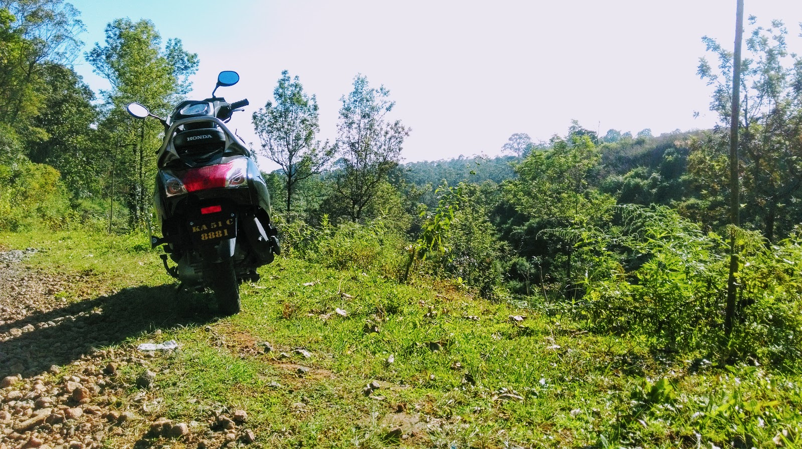
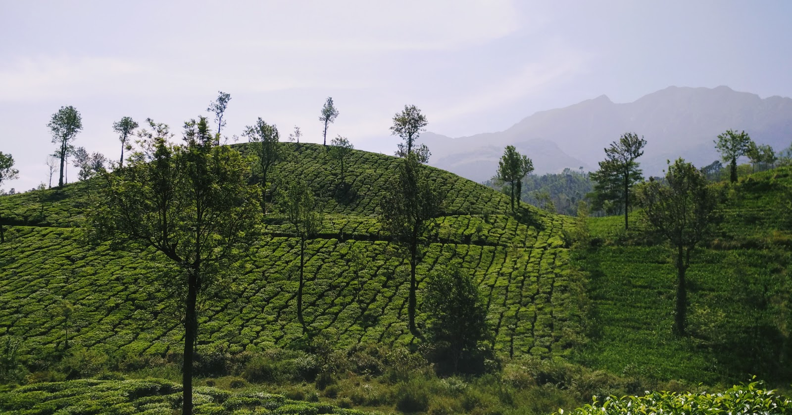

Wayanad - Kerala
LIFE IS EITHER A DARING ADVENTURE OR NOTHING.
There was a time when I wanted to escape office. It was a weekend of November 2015 and we had no plans. Recently one of my friends had shifted to Mysore for work. So I asked my flatmate & friend Aprit, if he is interested in visiting traveling to Mysore to meet our common friend Adarsh. We left at night and took an early morning train from Yeshwantpur Railway Station, Bangalore to Mysore. On reaching Mysore, more plans unravelled and we hired two scooty and then we all three left for Wayanad in Kerala.

Rental scooty at Wayanad
It was a tiring ride and driving through Bandipur Tiger Reserve kept us going out of fear. Though we made it to Wayanad by evening. After reaching we just slept and straighten our backs. The next day we planned to explore the beautiful coffee estates and also visited the Edakkal Caves. But we missed visiting Chembra peak because of time constraint. But we managed to enjoy to the fullest on our scooters.

Some random Coffee estate
Wayanad is a beautifully preserved region of Western Ghats and have scenic beauty of green plants and amazing people. We tried banana dishes and pakori along with chutney. The language difference while billing was taken care by a 7 year old boy who translated the amount to be paid between his father and us. To which I feel good that kids are more smart then we think and nation is progressing, even maybe a little. The amazing local food of Kerala and the super loving people gave me the best memories of the down south.